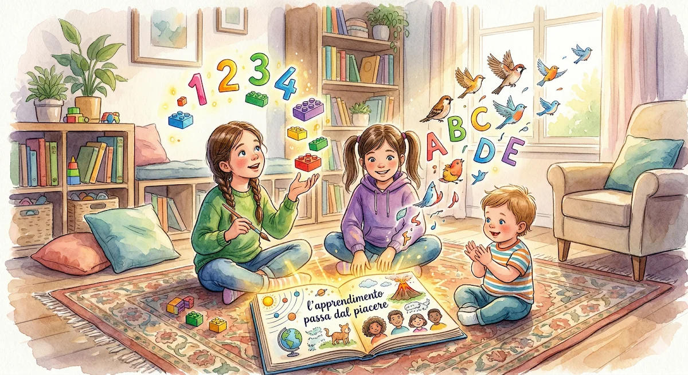
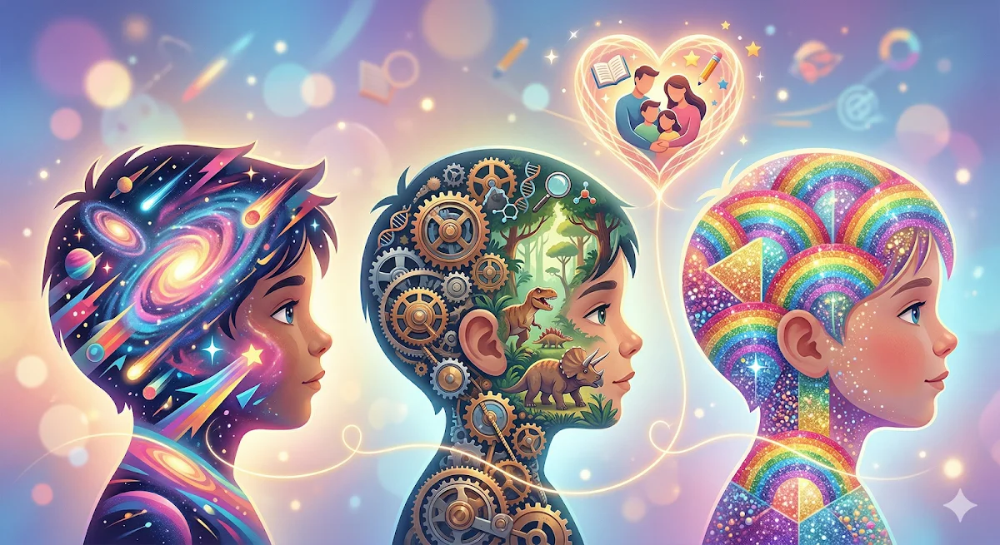
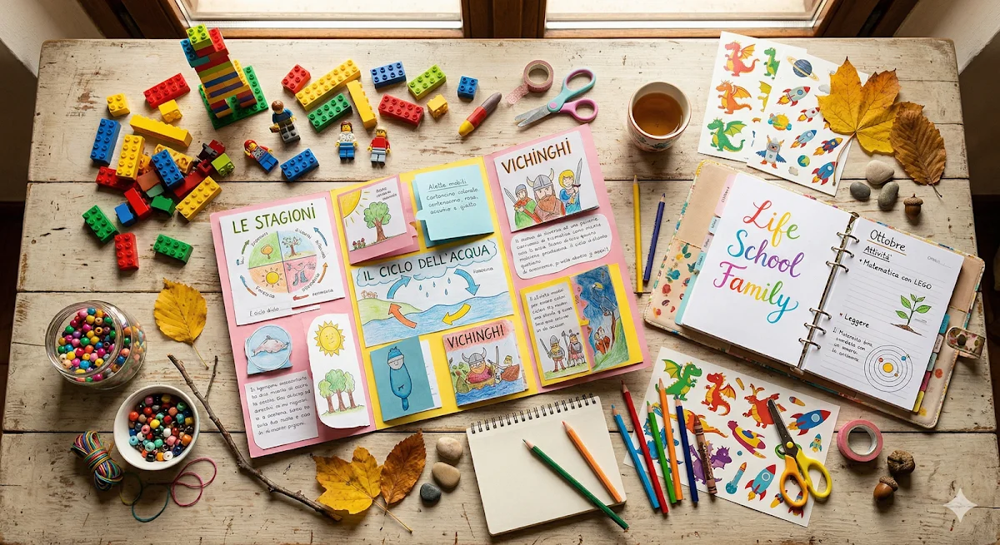

"Il programma è questo, ci dobbiamo adattare!"
Me l'ha detto un'insegnante, davanti a un bambino in difficoltà. Lo diceva con le migliori intenzioni, e con un filo di frustrazione. Io quella frase me la ricordo bene, perché mi ha lasciato addosso una domanda: come si adatta un programma rigido a una testa che funziona in tutt'altro modo?
Sono Mary. Da più di vent'anni sto in mezzo ai bambini: prima come maestra di doposcuola, poi come educatrice di nido, adesso come mamma di tre figli neurodivergenti. E in tutto questo tempo ho capito una cosa: la vita, la scuola e la famiglia non stanno in tre stanze separate. Sono la stessa stanza.
Life School Family nasce da qui. È un blog, è uno shop, ma prima di tutto è quello che ho imparato facendo.

Ognuno con il suo sistema operativo
A casa mia vivono tre piccoli vulcani. E nessuno dei tre funziona come gli altri due.
C'è chi capisce tutto al volo e ragiona velocissimo, ma ha una testa che "è come una tv con mille canali accesi", e inciampa quando c'è da leggere e da scrivere. Per mettere in fila i pensieri che corrono ha bisogno di colori e di forme.
C'è chi stare fermo proprio non ci riesce. Il mondo lo esplora muovendosi, con una curiosità che va dritta alla scienza e alla logica.
E c'è chi, per capire una cosa, deve toccarla, sentirla, rigirarsela tra le mani. Quando un argomento lo prende, che siano i dinosauri o i Lego, ci si tuffa dentro e ne esce che pare un'enciclopedia.
Tre bambini, e nessuno dei tre impara come c'è scritto sul programma.

"Sì, ci adattiamo. Ma a modo nostro"
Davanti a quel "ci dobbiamo adattare" mi sono sentita sola. E so che capita anche a te, che tu sia un genitore o un'insegnante: la scuola ci mette le migliori intenzioni, ma l'aiuto che serve non sempre arriva.
Allora ho risposto a modo mio. Sì, ci adattiamo: però in modo creativo, divertente e rispettoso del bambino.
Ho cominciato a mescolare le materie come si fa in cucina. Un po' di matematica con i Lego, che per Federico e la sua concretezza sono perfetti. Un pizzico di italiano con i pupazzi, o con la danza. La storia con un gioco di ruolo.
Funzionava. E io ci ho preso gusto.
Cosa intendo per materiale inclusivo
Attaccare due adesivi coi brillantini non basta. Anche se un po' di glitter e un arcobaleno, come nel mio planner "Obiettivi & Impegni", non guastano mai: chiedilo a Beatrice.
Un materiale è inclusivo quando lascia a ogni bambino la possibilità di imparare nel modo che gli riesce meglio. A casa nostra questo passa da tre verbi.
Vedere. Preparo cartelloni enormi, con immagini, parole chiave e forme. Quando i ragazzi finiscono un'attività ci attaccano un adesivo: un drago per chi sogna, un razzo per chi parte all'avventura. A chi impara con gli occhi, le immagini servono per capire. A chi ha i mille canali accesi servono chiarezza e struttura, per restare sul pezzo.
Toccare. Lego, perline, cubetti, materiali tattili come quelli di "Pre-schooling con le dita". Più sensi lavorano, più strade ha un'informazione per entrare in testa e restarci.
Giocare. Si impara meglio quando si ride. La ludodidattica è la mia passione ed è il cuore di tanti miei materiali, a cominciare dai lapbook: il gioco usato come strategia per imparare la matematica, la storia, le lingue.
Chi mi ha fatto da bussola
Tutto questo non me lo sono inventato da sola. La mia bussola sono Alli Beltrame e Valeria Mattaliano, con l'Educazione Responsabile: la relazione con il bambino viene prima del risultato, e prima del voto. Poi c'è Gardner, con le intelligenze multiple. E ci sono Pikler e Malaguzzi, che mi hanno insegnato a osservare sul serio.
Per questo non mi ritrovo negli approcci che guardano solo il comportamento, quello che si vede da fuori. A me interessa il perché. Educare, per me, è entrare in relazione.

Cosa trovi qui
Life School Family è per chi crede, come me, che l'apprendimento possa sempre passare dal piacere. Imparano i bambini, e intanto impariamo anche noi insieme a loro.
Nel blog racconto quello che facciamo a casa e come lo facciamo. Nello shop ci sono i materiali che preparo: il Life School Family Planner per organizzare le giornate di homeschooling (in A4 e in A5, con partenza da luglio o da settembre), "Pre-schooling con le dita" per i compiti dell'estate, i lapbook e tutto il resto.
Se ti senti sola, o solo, davanti a un programma che non torna: non lo sei. E se hai un'esperienza da raccontare, o solo voglia di fare due chiacchiere, scrivimi.
Io intanto alzo un bicchiere. Di succo di frutta, naturalmente!
Prima di salutarti, la domanda di oggi: tuo figlio come impara? Parlo del modo suo, quello che sul programma non c'è scritto.
A presto!